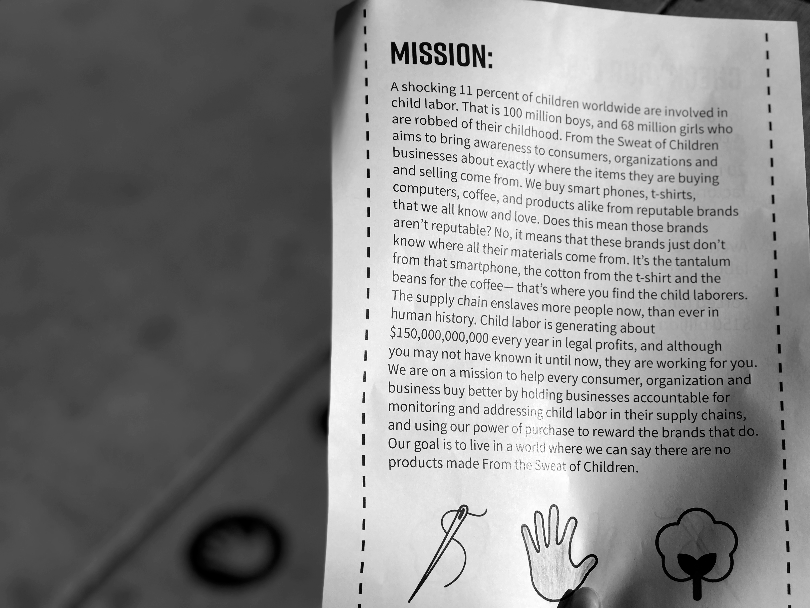

From the Sweat of Children was an installation done by Jane Doe. The mission was to bring attention to consumers, organizations, and businesses about the issues of child labor through an environmental installation in the heart of Michigan State University’s campus. This installation included: vinyl sayings and icons, signage, handouts, and t-shirts.